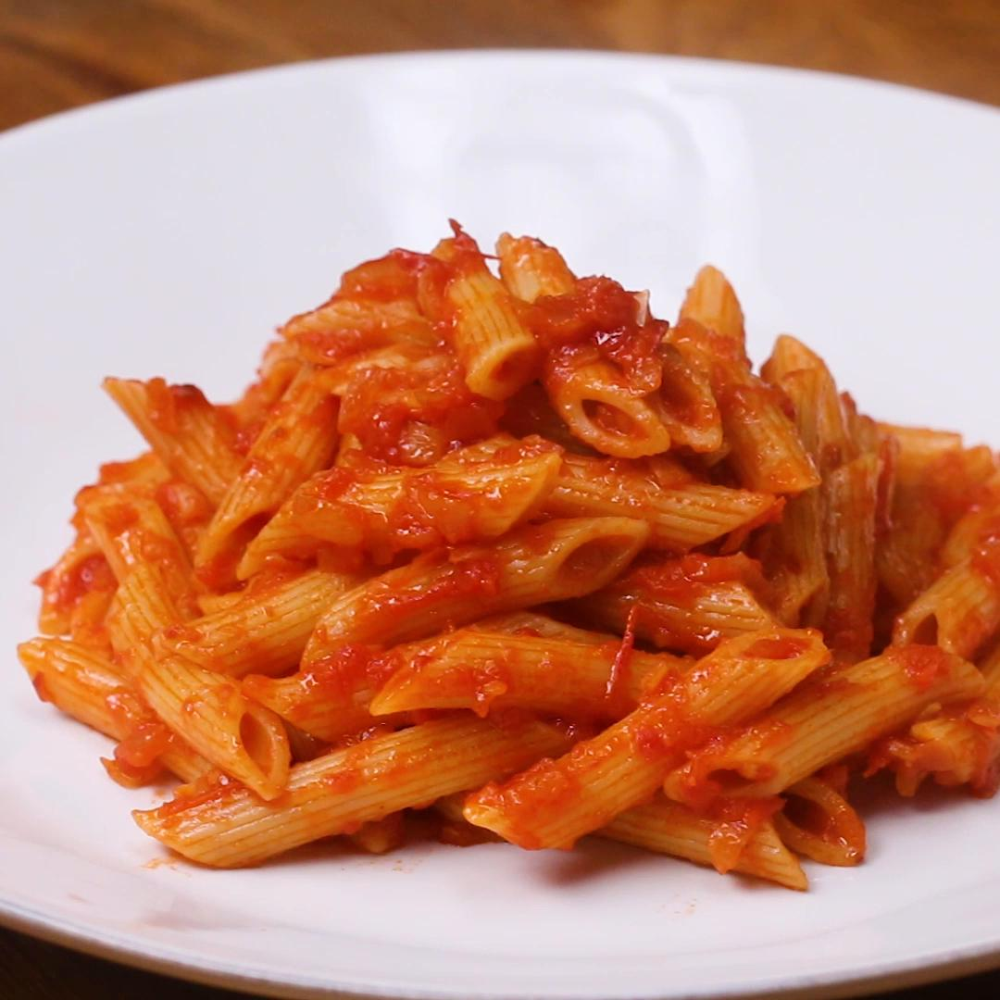

Romantastic
Roma tomatoes and romano cheese make this dish extra romantic!
Ingredients
- 1 - 2 servings leftover companeasy
- 10 medium roma tomatoes
- 50g shredded romano cheese
- 2 romano bean pods (optional garnish)
Directions
- Chop roma tomatoes and add to a large saucepan over medium heat
- Add the leftover companeasy and bring mixture to a low simmer
- Serve topped with romano cheese and romano bean pods
Home